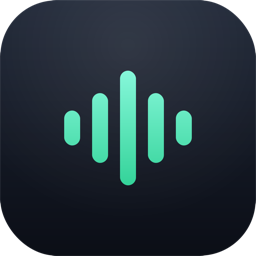

按住 ~/· 键
短按仍然是普通字符，按住超过阈值才进入录音。

Happy WhisprNative macOS menu bar dictation
Happy Whispr 是为中文开发者做的极简语音输入工具。它常驻菜单栏，把语音转成文字， 再送回 Ghostty、Claude Code、终端或任何正在输入的地方。
$ claude
帮我把这个 macOS 工具发布成一个可下载的应用
▋
正在录音，松开 ~· 开始转写
One gesture
短按仍然是普通字符，按住超过阈值才进入录音。
AVAudioEngine 在内存中采集 WAV，发送到 OpenRouter Whisper。
通过剪贴板和 Cmd+V，把结果送回当前前台应用。
没有窗口负担，不打断开发流。状态图标会跟随录音、转写和错误状态变化。
适合 Ghostty、Claude Code 和长命令描述，不需要切换输入法或调用系统听写。
麦克风、辅助功能、Keychain 都使用 macOS 原生能力，行为清楚可控。
Swift Package 项目结构简单，服务边界清楚，适合继续扩展快捷键和本地模型。
Security posture
API Key 只保存在 macOS Keychain。录音在内存中编码为 WAV，转写请求只在你松开按键后发出。 它不会把密钥写入配置文件，也不会把录音缓存到磁盘。
Build locally
项目已经发布在 GitHub。克隆、构建、打包成本地 app 即可试用。
git clone https://github.com/pmy0721/happy-whispr.git
cd happy-whispr
swift build
Scripts/build-app.sh
open ".build/Happy Whispr.app"应用需要全局监听 MacBook 左上角的 ~/· 键，并在转写完成后向当前应用合成粘贴事件。
Happy Whispr 面向开发场景，强调按住说话、松手粘贴、可选择 Whisper 模型和更短的操作链路。
当前版本先提供源码构建。后续可以加入 DMG、签名和自动更新。